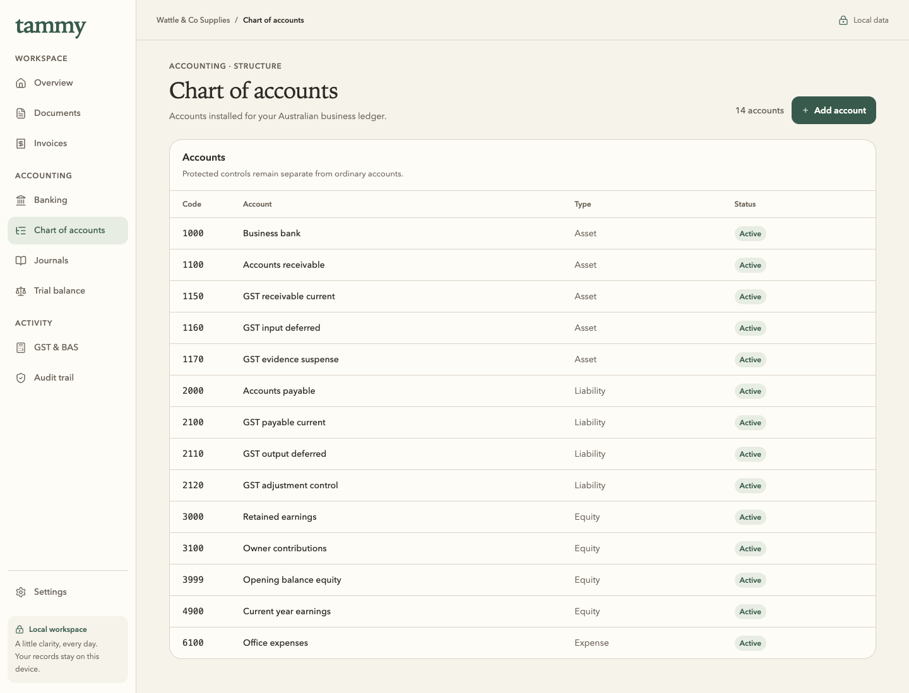
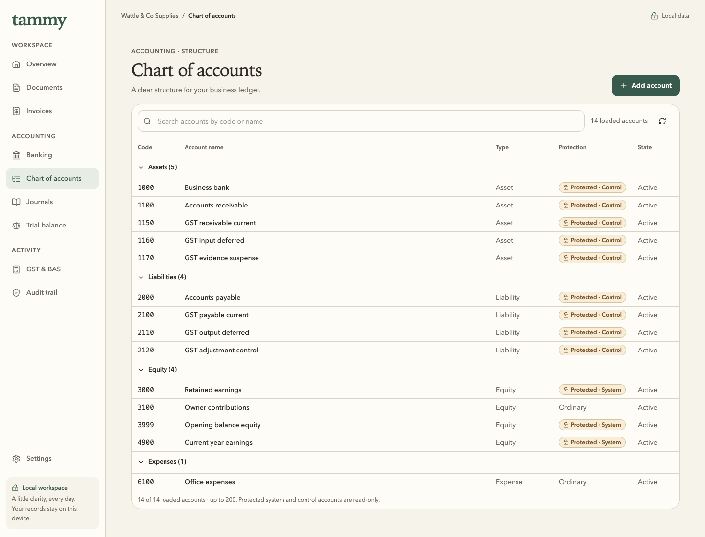
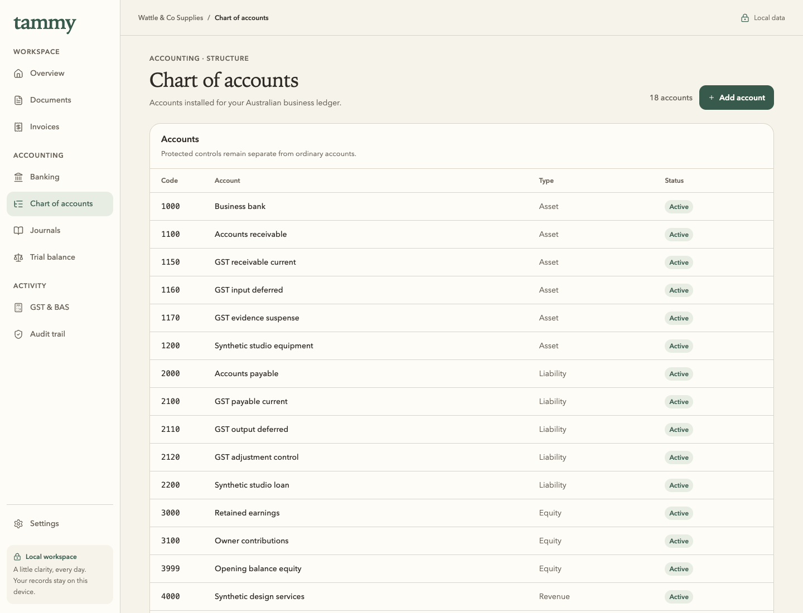
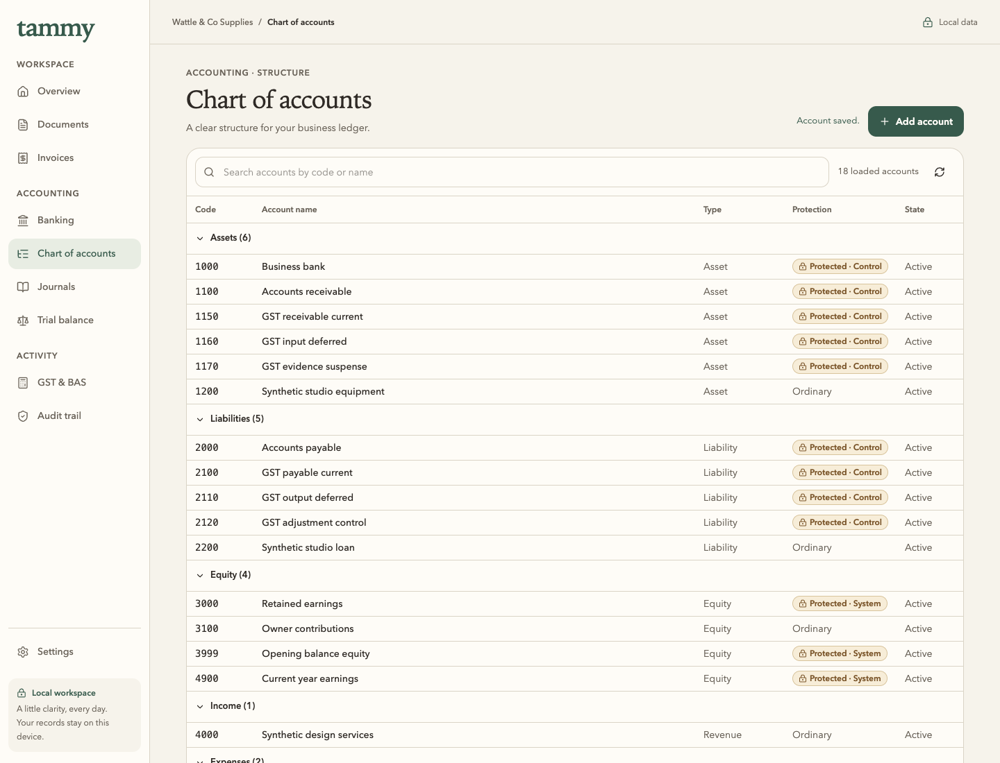
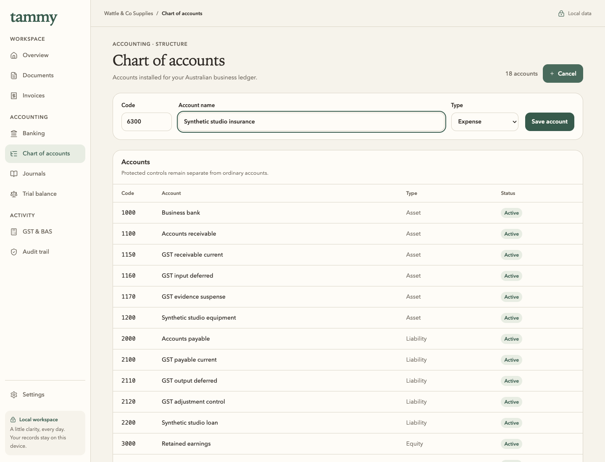
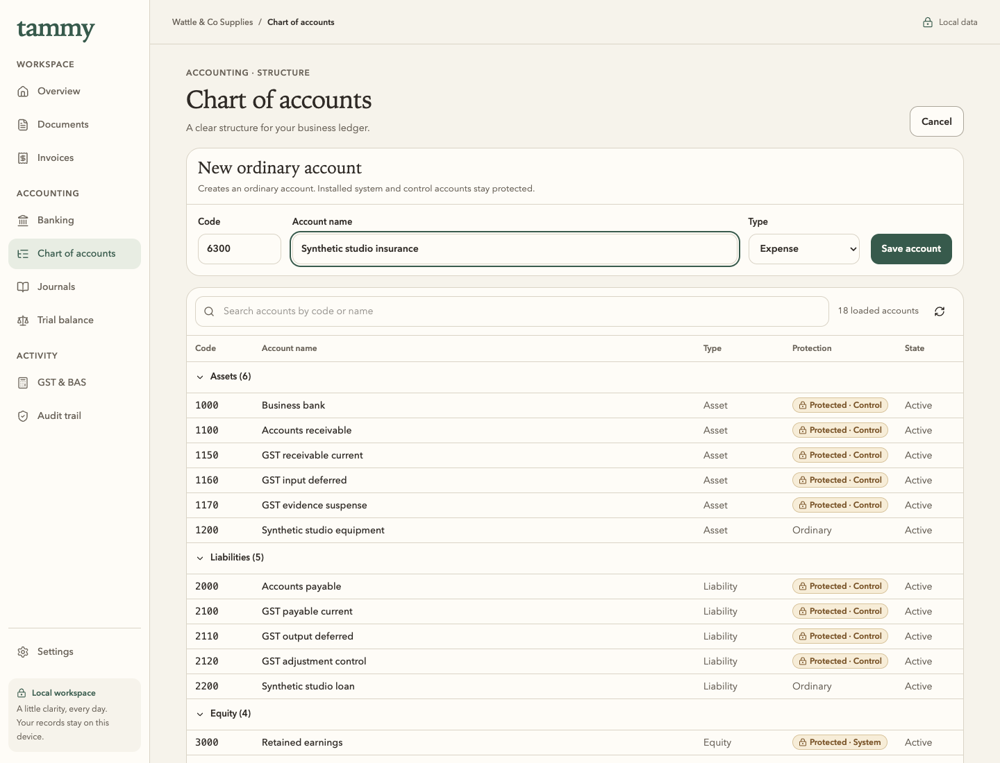
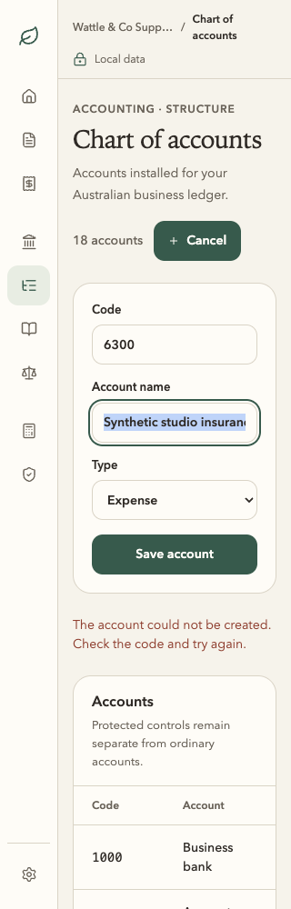
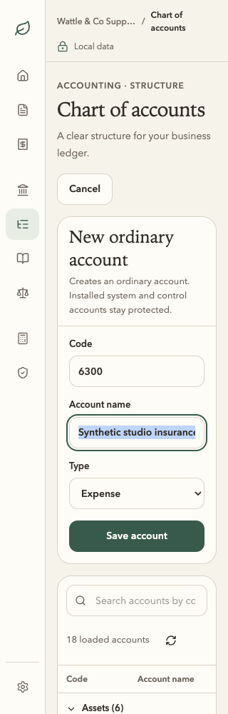
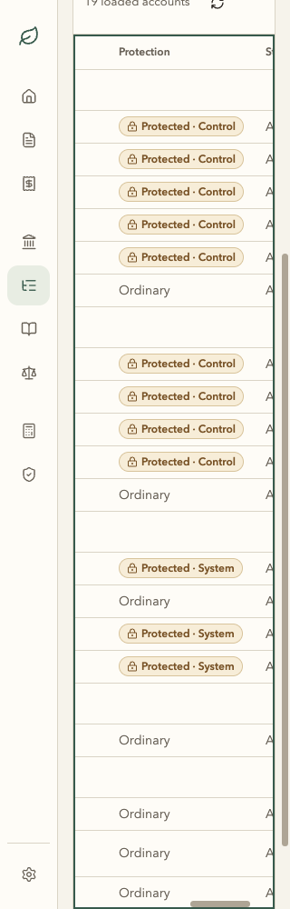

Chart of accounts · Soft Precision board 09
One implemented screen, compared with the approved reference. Real before and after use the same isolated synthetic records and viewport. The board is an unchanged generated concept, with different example data; it is not app evidence or exact visual parity.
Final app: 9bf430a7. Clean native harness: 4f202e73. Journey, provenance, failed attempt and qualification limits.
Matched installed chart · 14 accounts · 1440 × 1100





Same four UI-created accounts added · 18 loaded records




Ordinary-account creation · same inputs and viewport





320px · actual Tab focus and keyboard horizontal scrolling






Keyboard group disclosure · Local search · No-match recovery · Actual duplicate-code rejection · Measured geometry.


All prior and intermediate captures remain intact. Draft, merge and publication holds remain. This comparison does not qualify MAS, Windows 11 or official ATO use.